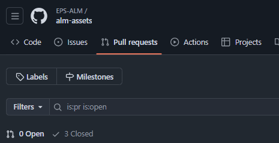

Relatório de Release - Release 1.0.0
Este relatório avalia, seguindo os critérios de avaliação propostos pelo professor, a primeira release do projeto de ALM.
Critérios de Avaliação Coletiva
1. Práticas Ágeis
a. Commits atômicos
Executando o comando git log --pretty=format:"%h - %an, %ar : %s" -n 10 é possível visualizar os últimos 10 commits do repositório. A partir disso, é possível observar que os commits são atômicos:
alm-docs
alm-liability
alm-frontend
alm-assets
alm-service
alm-risk-manager
stocks-forecasting
b. Documentação das sprints
A documentação das sprints está disponível no repositório alm-docs. A documentação da primeira sprint pode ser acessada aqui.
c. Quantidade de Issues
Devido ao caráter avaliativo da disciplina, as issues foram centralizadas no repositório alm-docs. A quantidade de issues pode ser visualizada aqui.
Média de Issues
Considerando que, nesse momento, existem 54 issues cadastradas. A média de issues por sprint é de, aproximadamente, 7.
d. Pull Requests
A quantidade de pull requests para cada repositório pode ser visualizada abaixo:
alm-docs
alm-liability
alm-frontend
Não houve necessidade de Pull Requests pois o desenolvimento foi feito por um único membro.alm-assets
alm-service
alm-risk-manager
stocks-forecasting
Não houve necessidade de Pull Requests pois o desenolvimento foi feito em pareamento síncrono.e. Qualidade das Issues
As issues estão bem descritas e organizadas. A descrição das issues é clara e objetiva, facilitando a compreensão do que deve ser feito. Porém, a análise deve ser comprovada manualmente para cada repositório.
f. Qualidade dos Pull Requests
Os pull requests não possuem documentação, checkilist, ou qualquer outra forma de garantir a qualidade do código além da revisão manual. A análise de qualidade deve ser comprovada manualmente para cada repositório.
g. Velocity e curva de commits
A curva de commits pode ser obtida atráves do comando •git log --pretty=format:"%ad" --date=short | sort | uniq -c. A curva de commits para cada repositório pode ser visualizada abaixo:
alm-docs
alm-liability
alm-frontend

alm-assets
alm-service
alm-risk-manager

stocks-forecasting
2. Práticas DevOps
Deploy automático do repositórios de alm-liability, alm-assets, alm-service e alm-risk-manager foi realizado no Heroku:
- Service: alm-service
- Assets: alm-assets
- Risk Manager: alm-risk-manager
- Liability: alm-liability
Já o repositório alm-docs foi hospedado no GitHub Pages:
Por fim, o repositório do frontend foi hospedado no OnReader:
- Frontend: alm-frontend
3. Escopo e Arquitetura
Critérios de Avaliação Individual
1. Quantidade total de commits
A quantidade total de commits para cada repositório e cada integrante pode ser visualizada abaixo:
alm-docs

alm-liability

alm-frontend

alm-assets

alm-service

alm-risk-manager

stocks-forecasting

2. Quantidade de Issues Alocadas
A quantidade de issues alocadas para cada integrante pode ser visualizada abaixo:
- Arthur Ferreira Rodrigues
- Lucas Pimentel Quintão
- Augusto Durães Camargo
- Cristian Furtado
- Deivid Carvalho
- Eduardo Maia Rezende
- Eliás Yousef
- Fernando Vargas
- Gustavo Barbosa
- Gustavo Martins Ribeiro
- José Luís Ramos Teixeira
- Luis Guilherme
- Marcos Vinícius de Deus
- Pablo Christianno Silva Guedes
- Pedro Vitor Augusto de Jesus
- Sávio Cunha
- Victor Hugo
- Wesley Santos
Critérios de Avaliação da Release 1 do MVP
1. Story Map
O story map foi desenvolvido e pode ser acessado aqui.
2. Épicos, features e US
As features planejadas podem ser visualizadas no GitHub.
3. Protótipo
O protótipo foi desenvolvido e pode ser acessado aqui.
4. Código - Implementação
Deve ser analisado manualmente para cada repositório:
5. Arquitetura Documentada
A arquitetura foi documentada e pode ser acessada aqui.
6. Configuração do Ambiente
Prcessos de setup de ambiente podem ser acessados no README de cada repositório.
7. GitPages
O GitHub Pages foi configurado para o repositório alm-docs e pode ser acessado aqui.
8. Padrões Software Livre
Os padrões de software livre foram seguidos e podem ser acessados pelo GitHub:
9. Release Notes
As releases não tiveram suas notas documentadas.
Documento de Release Assinado
O documento de release foi assinado por todos os membros da equipe e pode ser acessado aqui.
Alterações
Não devem ser realizadas alterações nessa página, visto que o documento deve permanecer idêntico ao assinado pelos membros da equipe.
Data de assinatura: 21/12/2024